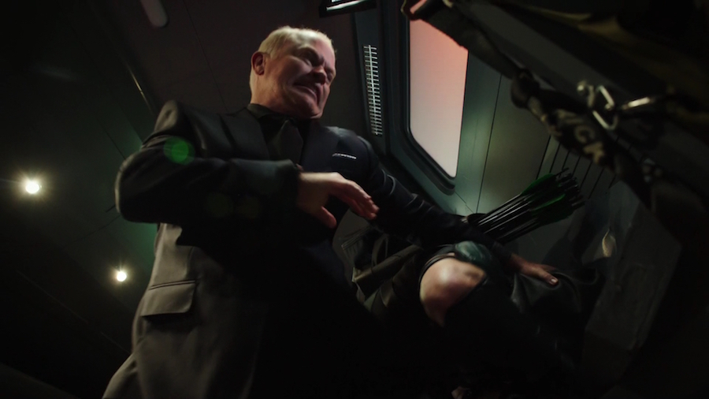
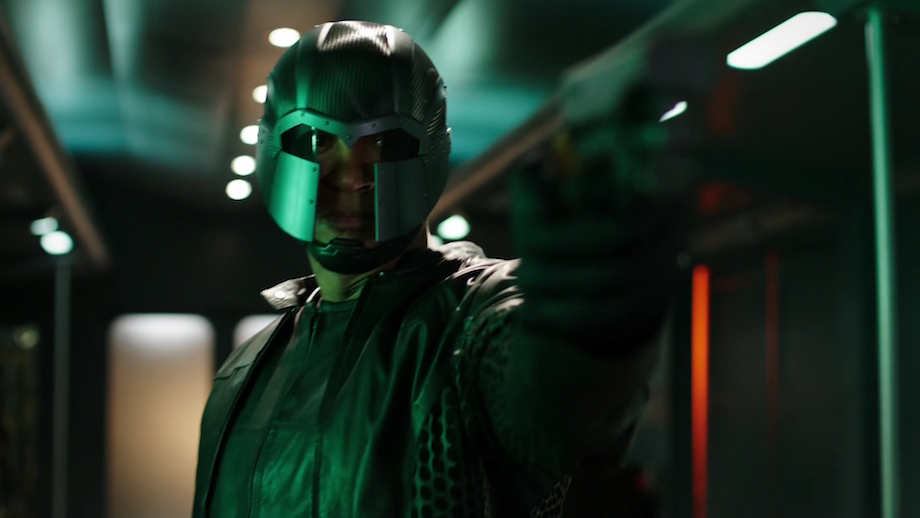

Arrow S04|E01 Green Arrow
It was tough to know just how excited to be for Arrow’s fourth season. On one hand, despite its high points, Season 3 was pretty disappointing overall. But on the other, all of the changes announced for this season (in terms of tone, costumes, villains, etc.) look to be moving the show in the right direction. And if the premiere is anything to judge, Arrow is on firmer footing as it charges into Oliver Queen’s new status quo.
More than the new villain or the costume changes, the most obvious difference in this episode was Ollie himself. It’s almost strange seeing our morose, tortured hero so genuinely happy and at peace with himself. For all that the Season 3 finale failed to justify Ollie’s sudden shift away from the vigilante lifestyle, this episode really conveyed that psychological shift. Stephen Amell deserves a lot of credit for altering so much of his usual performance. From the tenor of his voice to the way he carried himself, Amell nailed the idea that Ollie is a fundamentally different person than he was back in May.
It’s almost as if Amell is playing two completely different characters now. If present-day Ollie is calm and cheerful, the post-China Ollie is lost, adrift and about as miserable as we’ve ever seen the character. The contrast really worked. I can’t say I’m particularly invested in the new flashback storyline yet (what little there is so far), but it should be really interesting to see these two versions of Ollie struggle and evolve over the course of this season.
While Ollie apparently would love nothing better than to spend the rest of his life cooking, Felicity couldn’t resist going behind his back and helping out Team Arrow.One thing this episode did especially well was justifying the need for Ollie to put his new life on hold and dive back into the superhero fray. And that’s all thanks to Damien Darhk. Other than perhaps Peter Stormare’s Count Vertigo, I don’t think any villain on this show has left such a strong and immediate impression as Neal McDonough’s Darhk. He had a weird, infectious charm in his big entrance scene that wasn’t unlike Brandon Routh’s Ray Palmer from last season. Yet very quickly, Darhk established himself as a terrifying villain and a true force to be reckoned with. Clearly this is a man of considerable power and resources but a fairly tenuous grip on sanity. Even ignoring the mystical element, Darhk seems like just the sort of flashy, compelling foe this season needs.

Given the terrifying nature of Damien Darhk and his H.I.V.E. agents, it’s impressive that this episode was able to juggle the light and dark elements so well. On one hand, we saw clearly just how badly the city is suffering. The population is dropping, businesses are shutting down, and there’s a general sense of desperation in the newly christened Star City. Yet there was also a sense of optimism that came with the emergence of Green Arrow. As stupid as it is that Ollie is trying to convince the city that he’s a different vigilante from that other guy, I’m glad to see him falling more in line with the classic incarnation of the character. He’s stepping out of the shadows and becoming more of an inspiration to those he defends. Even his costume is sleeker and more comic accurate. Now he just needs that goofy Robin Hood goatee.
The weak point this week was Team Arrow. Mind you, Diggle had a strong week. That’s pretty much to be expected given all the baggage left over between Diggle and Ollie from last season. This is clearly a bromance that’s going to take a while to heal, and David Ramsey handled that reluctant reunion with his former friend well. That helmet needs to go, however. It probably wouldn’t stand out quite so badly if it wasn’t for the fact that the rest of Diggle’s superhero outfit is just functional plainclothes.

It was more Thea and Laurel who failed to impress. Laurel too often came across as the same bumbling, barely competent fighter she was when she first donned the Canary costume. There’s little sense that the last six months have made her a better warrior. Plus, that scene where she rescued the boy in the train station was painfully awkward. As for Thea, the writers don’t seem entirely sure what to do with her, so they’re treating her basically like Roy 2.0. The subplot involving her overzealous behavior in costume felt forced and shoehorned into the story. Hopefully that evolves into something more compelling over the next few weeks.
Even better, the final few scenes set a number of interesting wheels in motion. It seems there’s a lot more to Damien Darhk than is immediately apparent, what with his strange knife ritual and references to his “associates.” Then there was the twist that Detective Lance is working with H.I.V.E. And most significantly, there was the dramatic flash-forward to Ollie and Barry standing over the grave of… somebody. Obviously the implication is that it was Felicity, though you’d think if that were the case the camera would have panned around to show her tombstone. But regardless of which loved one they’re mourning, this scene made it abundantly clear that there’s a long, dark road ahead for this lighthearted Oliver Queen.
Next weeks episode preview: